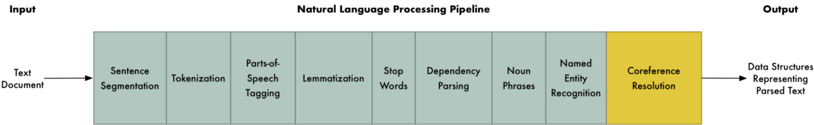
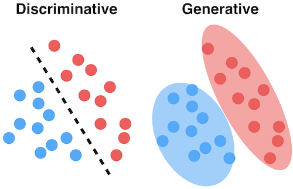
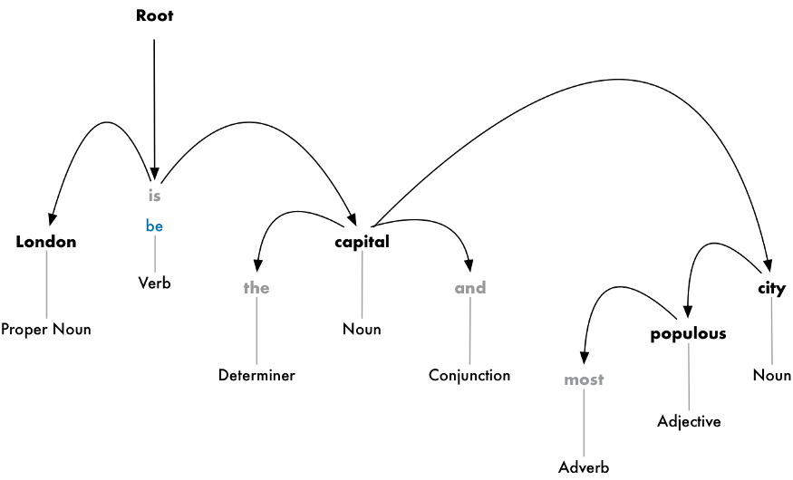
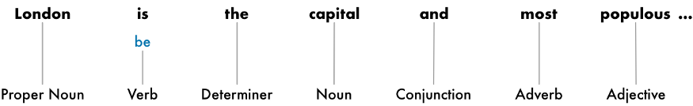
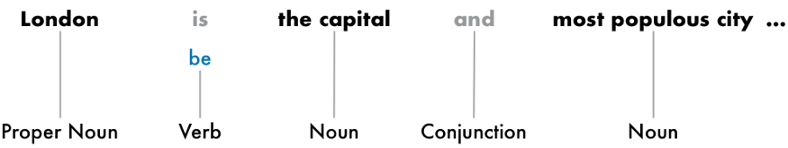
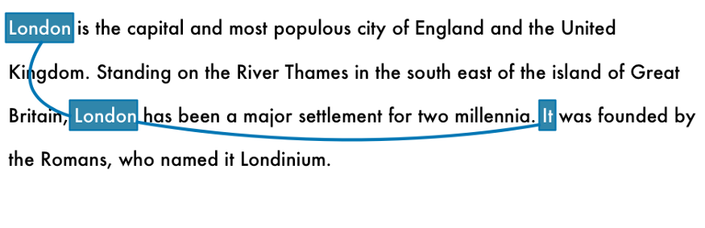
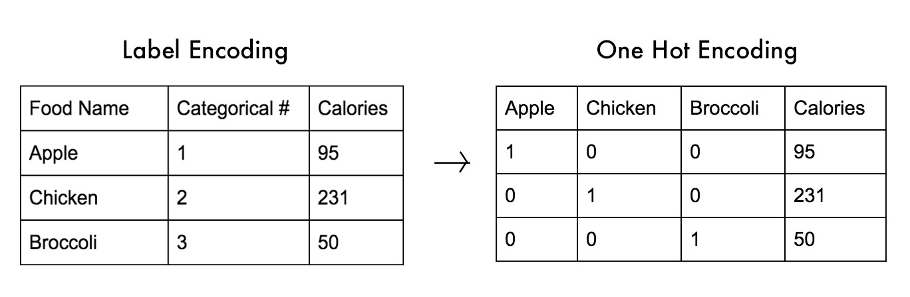
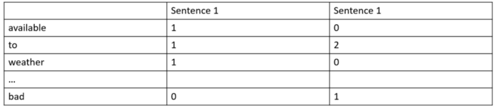

NLP pipeline

Coreference resolution is an optional step that isn’t always done.
it’s worth mentioning that these are the steps in a typical NLP pipeline, but you will skip steps or re-order steps depending on what you want to do and how your NLP library is implemented. For example, some libraries like spaCy do sentence segmentation much later in the pipeline using the results of the
dependency parse.
Data Augmentation
1. Easiest Data Augmentation Techniques in Natural Language Processing:
• Synonym Replacement:
Randomly choose n words from the sentence that are not stop words. Replace each of these words with one of its synonyms chosen at random.
• Random Insertion:
Find a random synonym of a random word in the sentence that is not a stop word. Insert that synonym into a random position in the sentence. Do this n times.
• Random Swap:
Randomly choose two words in the sentence and swap their positions. Do this n times.
• Random Deletion:
Randomly remove each word in the sentence with probability p.
Code Implementation
Tokenization
1. Description:
• The process of segmenting running text into words and sentences.
Electronic text is a linear sequence of symbols (characters or words or phrases). Naturally, before any real text processing is to be done, text needs to be segmented into linguistic units such as words, punctuation, numbers, alpha-numerics, etc. This process is called tokenization.
In English, words are often separated from each other by blanks (white space), but not all white space is equal. Both “Los Angeles” and “rock 'n' roll” are individual thoughts despite the fact that they contain multiple words and spaces. We may also need to separate single words like “I'm” into separate words “I” and “am”.
Tokenization is a kind of pre-processing in a sense; an identification of basic units to be processed. It is conventional to concentrate on pure analysis or generation while taking basic units for granted. Yet without these basic units clearly segregated it is impossible to carry out any analysis or generation.
The identification of units that do not need to be further decomposed for subsequent processing is an extremely important one. Errors made at this stage are very likely to induce more errors at later stages of text processing and are therefore very dangerous.
• More information can be found at this link:
The Art of Tokenization
Text Preprocessing
What is text preprocessing?
• To preprocess your text simply means to bring your text into a form that is predictable and analyzable for your task. A task here is a combination of approach and domain. For example, extracting
top keywords with TF-IDF (approach) from Tweets (domain) is an example of a Task.
Types of text preprocessing techniques:
• Lowercasing
Lowercasing ALL your text data, although commonly overlooked, is one of the simplest and most effective form of text preprocessing. It is applicable to most text mining and NLP problems and can help in cases where your dataset is not very large and significantly helps with consistency of expected output.
• Stemming
Stemming is the process of reducing inflection in words (e.g. troubled, troubles) to their root form (e.g. trouble). The “root” in this case may not be a real root word, but just a canonical form of the original word.
• Lemmatization
Lemmatization on the surface is very similar to stemming, where the goal is to remove inflections and map a word to its root form. The only difference is that, lemmatization tries to do it the proper way. It doesn’t just chop things off, it actually transforms words to the actual root. For example, the word “better”
would map to “good”. It may use a dictionary such as WordNet for mappings or some special rule-based approaches.
• Stopword Removal
Stop words are a set of commonly used words in a language. Examples of stop words in English are “a”, “the”, “is”, “are” and etc. The intuition behind using stop words is that, by removing low information words from text, we can focus on the important words instead.
• Normalization
A highly overlooked preprocessing step is text normalization. Text normalization is the process of transforming a text into a canonical (standard) form. For example, the word “gooood” and “gud” can be transformed to “good”, its canonical form. Another example is mapping of near identical words such as “stopwords”,
“stop-words” and “stop words” to just “stopwords”.
• Noise Removal
Noise removal is about removing characters digits and pieces of text that can interfere with your text analysis. Noise removal is one of the most essential text preprocessing steps. It is also highly domain dependent.
For example, in Tweets, noise could be all special characters except hashtags as it signifies concepts that can characterize a Tweet. The problem with noise is that it can produce results that are inconsistent in your downstream tasks.
• More information can be found at this link:
All you need to know about text preprocessing for NLP and Machine Learning
Regular Expressions
Basic Topics:
Anchors: ^ and $
^Thematches any string that starts with The
end$matches a string that ends with end
^The end$exact string match (starts and ends with The end)
roarmatches any string that has the text roar in it
Quantifiers: * + ? and {}
abc*matches a string that has ab followed by zero or more c
abc+matches a string that has ab followed by one or more c
abc?matches a string that has ab followed by zero or one c
abc{2}matches a string that has ab followed by 2 c
abc{2,}matches a string that has ab followed by 2 or more c
abc{2,5}matches a string that has ab followed by 2 up to 5 c
a(bc)*matches a string that has a followed by zero or more copies of the sequence bc
a(bc){2,5}matches a string that has a followed by 2 up to 5 copies of the sequence bc
OR operator: | or []
a(b|c)matches a string that has a followed by b or c
a[bc]same as previous
Character Classes: \d \w \s and .
\dmatches a single character that is a digit
\wmatches a word character (alphanumeric character plus underscore)
\smatches a whitespace character (includes tabs and line breaks)
.matches any character
\Dmatches a single non-digit character
\Wmatches any non-word character (equal to [^a-zA-Z0-9_])
\Smatches any non-whitespace character (equal to [^\r\n\t\f\v ])
In order to be taken literally, you must escape the characters ^.[$()|*+?{\with a backslash \ as they have special meaning.
\$\d: matches a string that has a $ before one digit
Flags
g(global) does not return after the first match, restarting the subsequent searches from the end of the previous match
m(multi-line) when enabled ^ and $ will match the start and end of a line, instead of the whole string
i(insensitive) makes the whole expression case-insensitive (for instance /aBc/i would match AbC)
Grouping and Capturing: ()
a(bc)parentheses create a capturing group with value bc
a(?:bc)*using ?: we disable the capturing group
a(?
Bracket Expressions: []
[abc]matches a string that has either an a or a b or a c
[a-c]same as previous
[a-fA-F0-9]a string that represents a single hexadecimal digit, case insensitively
[0-9]%a string that has a character from 0 to 9 before a % sign
[^a-zA-Z]a string that has not a letter from a to z or from A to Z. In this case the ^ is used as negation of the expression
Remember that inside bracket expressions all special characters (including the backslash \) lose their special powers: thus we will not apply the “escape rule”.
Greedy and Lazy match:
<.+?> matches any character one or more times included inside < and >, expanding as needed
<[^<>]+> =matches any character except < or > one or more times included inside < and >
Boundaries: \b and \B
\babc\b performs a "whole words only"
\Babc\Bmatches only if the pattern is fully surrounded by word characters
Back-references: \1
([abc])\1 using \1 it matches the same text that was matched by the first capturing group
([abc])([de])\2\1 we can use \2 (\3, \4, etc.) to identify the same text that was matched by the second (third, fourth, etc.) capturing group
(?
Look-ahead and Look-behind: (?=) and (?<=)
d(?=r)matches a d only if is followed by r, but r will not be part of the overall regex match
(?<=r)dmatches a d only if is preceded by an r, but r will not be part of the overall regex match
d(?!r)matches a d only if is not followed by r, but r will not be part of the overall regex match
(?<!r)dmatches a d only if is not preceded by an r, but r will not be part of the overall regex match
Part-Of-Speech (POS) Tagging
Generative VS Discriminative Models:

• Generative Algorithm models how the data was generated in order to categorize a signal. It asks the question: based on my generation
assumptions, which category is most likely to generate this signal?
• Discriminative Algorithm does not care about how the data was generated, it simply categorizes a given signal.
Goal:
POS tagging is the process of marking up a word in a corpus to a corresponding part of a speech tag, based on its context and definition.
The Different POS Tagging Techniques
• Lexical Based Methods Assigns the POS tag the most frequently occurring with a word in the training corpus.
• Rule-Based Methods Assigns POS tags based on rules. For example, we can have a rule that says, words ending
with “ed” or “ing” must be assigned to a verb. Rule-Based Techniques can be used along with Lexical Based approaches to allow POS Tagging of words that are not present in the training corpus but are there in the testing data.
• Probabilistic Methods This method assigns the POS tags based on the probability of a particular tag sequence occurring. Conditional Random Fields (CRFs) and Hidden Markov Models (HMMs) are probabilistic approaches to assign a POS Tag.
• Deep Learning Methods Recurrent Neural Networks can also be used for POS tagging.
Stop Words
• What are stop words?
“Stop words” are the most common words in a language like “the”, “a”, “on”, “is”, “all”. These words do not carry important meaning and are usually removed from texts.
• when should I remove stop words?
Problems like sentiment analysis are much more sensitive to stop words removal than document classification.
You should remove these tokens only if they don’t add any new information for your problem. Classification problems normally don’t need stop words because it’s possible to talk about the general idea of a text even if you
remove stop words from it.
So, for theme classification, stop words are useless. In any other case, it’s better to keep these words and do some tests with and without them so see how it affects the model. Anyway, you should never remove stop
words without thinking about the impact of these words on the problem you are trying to solve.
Dependency Parsing
• What is Dependency parsing?
Dependency parsing figure out how all the words in a sentence relate to each other.
• GOAL:
The goal is to build a tree that assigns a single parent word to each word in the sentence. The root of the tree will be the main verb in the sentence.

But we can go one step further. In addition to identifying the parent word of each word, we can also predict the type of relationship that exists between those two words:

• Finding Noun Phrases:
So far, we’ve treated every word in our sentence as a separate entity. But sometimes it makes more sense to group together the words that represent a single idea or thing. We can use the information from the dependency parse tree to automatically group together words that are all talking about the same thing.
For example, instead of this:

We can group the noun phrases to generate this:

Whether or not we do this step depends on our end goal. But it’s often a quick and easy way to simplify the sentence if we don’t need extra detail about which words are adjectives and instead care more about extracting complete ideas.
Named Entity Recognition (NER)
• Description
In our sentence, we have the following nouns:
Some of these nouns present real things in the world. For example, “London”, “England” and “United Kingdom” represent physical places on a map. It would be nice to be able to detect that! With that information, we could automatically extract a list of real-world places mentioned in a document using NLP.
The goal of Named Entity Recognition, or NER, is to detect and label these nouns with the real-world concepts that they represent. Here’s what our sentence looks like after running each token through our NER tagging model:
But NER systems aren’t just doing a simple dictionary lookup. Instead, they are using the context of how a word appears in the sentence and a statistical model to guess which type of noun a word represents. A good NER system can tell the difference between “Brooklyn Decker” the person and the place “Brooklyn”
using context clues.
Here are just some of the kinds of objects that a typical NER system can tag:
- People’s names
- Company names
- Geographic locations (Both physical and political)
- Product names
- Dates and times
- Amounts of money
- Names of events
Coreference Resolution
• Description
English is full of pronouns — words like he, she, and it. These are shortcuts that we use instead of writing out names over and over in each sentence. Humans can keep track of what these words represent based on context. But our NLP model doesn’t know what pronouns mean because it only examines one sentence at a time.
Let’s look at the third sentence in our document:
“It was founded by the Romans, who named it Londinium.”
If we parse this with our NLP pipeline, we’ll know that “it” was founded by Romans. But it’s a lot more useful to know that “London” was founded by Romans.

Word Representation in Natural Language Processing
• Dictionary Lookup:
First, take the corpus which can be collection of words, sentences or texts. Pre-process them into an intended format. One way is to use lemmatization, which is a process of converting word to its base form. For example, given words walk, walking, walks and walked, their lemma would be walk.
After that, build the lookup dictionary by creating a mapping between words and IDs i.e. each unique word in the vocabulary is assigned an ID.
Then, for each given word, return the corresponding integer representation by looking it up in the dictionary. If the word is not present in the dictionary, the integer corresponding to the Out of Vocabulary token should be returned.
By treating tokens as integers, the model might incorrectly assume the existence of natural ordering. For example, the dictionary contains entries such as 1: “airport” and 2: “plane” . The token with greater ID value might be considered as more important by the Deep learning models than the tokens
with less values which is a wrong assumption. Models which are trained with this type of data are prone to failure. On the contrary, data with ordinal values such as size measures 1: “small”, 2: “medium”, 3:“large” is suitable for this case. Because there is a natural ordering in the data.
• One-Hot Encoding
The second approach of word representation is one-hot encoding. The main idea is to create a vocabulary size vector with filled zeros except one. For a single word only corresponding column is filled with the value 1 and the rest are zero valued. The encoded tokens will consist of vector with dimension
1 × (N+ 1), where N is the size of the dictionary and the extra 1 is added to N for the Out of Vocabulary token.
The advantage of this encoding to ordinal representation is that it does not suffer from undesirable bias. However, its immense and sparse vector representation requires large memory for computation.

• Distributional Representation
The main idea behind this approach is that words typically appearing in the similar context would have a similar meaning. The idea is to store the word-context co-occurrence matrix F in which rows represent words in the vocabulary and columns represent contexts. The context could be sliding windows over
the training sentences, or even documents. The matrix entries consist a frequency counts or tf-idf (Term Frequency-Inverse Document Frequency) scores.
Sentence 1: Boston has available flights to major US cities.
Sentence 2: Flights to Boston were cancelled due to bad weather conditions.

Since the number of context could be very large, e.g. document might contain thousand of sentences, these methods are known for being inefficient.
• Word Embedding
Collective term for models that learned to map a set of words or phrases in a vocabulary to vectors of numerical values.Word Embedding is really all about improving the ability of networks to learn from text data. By representing that data as lower dimensional vectors. These vectors are called Embedding.